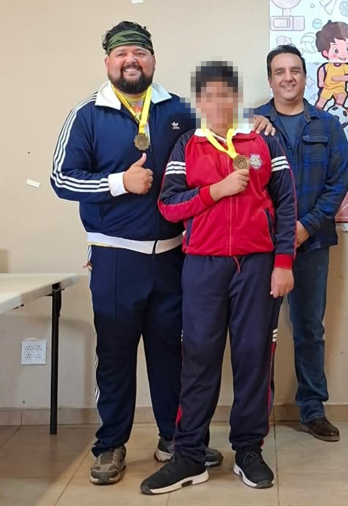
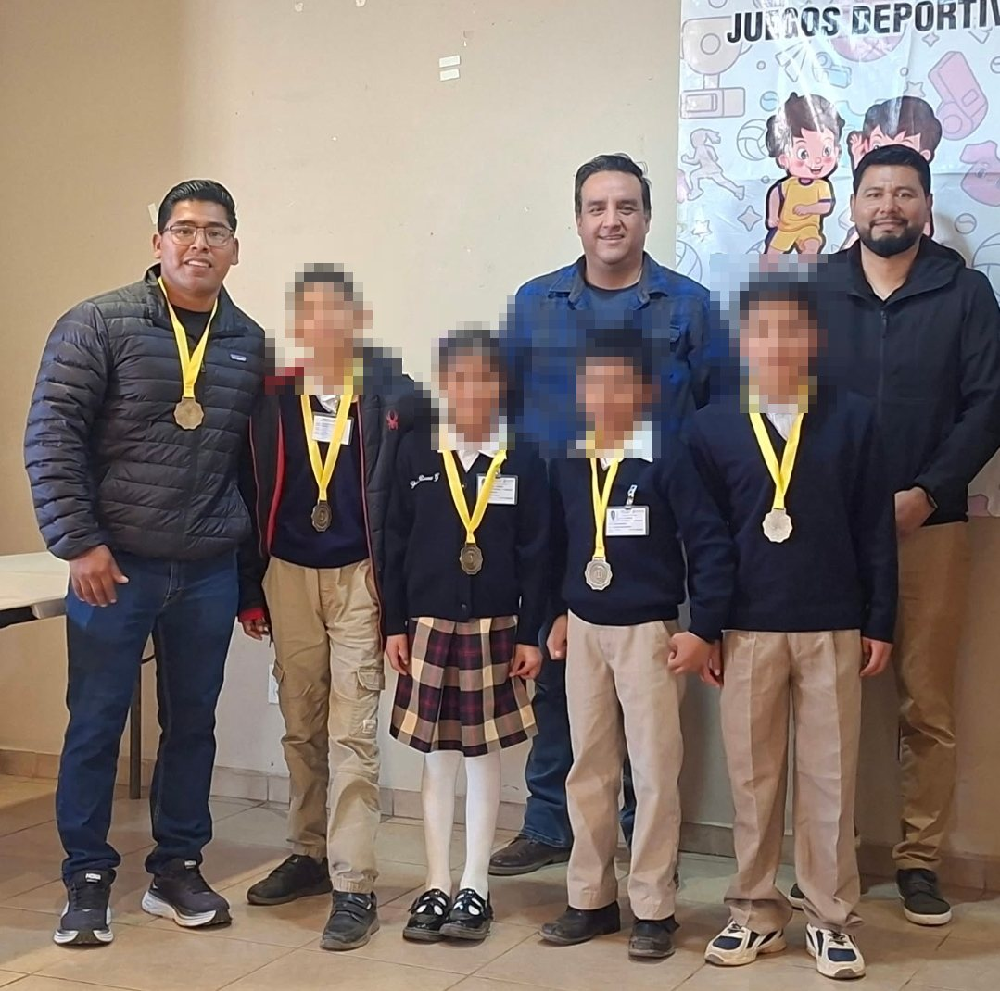
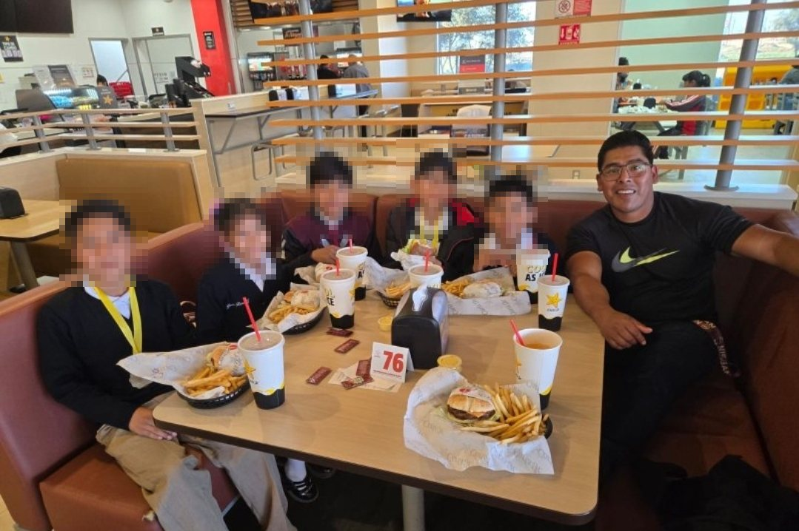

Zona Escolar 050
Zona Escolar 050Por la seguridad de nuestras alumnas y alumnos, sus rostros aparecen difuminados en todas las fotografías.
El jueves 26 de noviembre, el salón de la Sección 2 del SNTE en San Quintín fue sede del torneo de ajedrez de las zonas escolares federales de la región, como parte de los Juegos Deportivos Estatales de la Educación Básica. Alumnas y alumnos de distintas escuelas primarias se enfrentaron tablero a tablero durante toda la jornada.
La Zona Escolar 050 regresó con dos primeros lugares:
Individual varonil
Abraham Macías Sánchez, alumno de la Escuela Primaria Belisario Domínguez.
Equipo mixto
Escuela Primaria José Vasconcelos.


Un festejo bien merecido
Al terminar el torneo, el equipo campeón de la José Vasconcelos celebró su triunfo con una comida junto a su maestro. Un merecido reconocimiento después de una jornada de concentración frente al tablero.

El esfuerzo detrás de cada partida
Detrás de cada medalla hay horas de práctica, concentración y trabajo en equipo. El ajedrez ayuda a nuestras niñas y niños a pensar antes de actuar, a planear, a respetar las reglas y a saber ganar y perder.
La Supervisión Escolar Zona 050 felicita a las alumnas y alumnos participantes, a los maestros de Educación Física y a los directivos que los prepararon y acompañaron, y a las familias que los apoyan. ¡Mucho éxito en la etapa municipal!